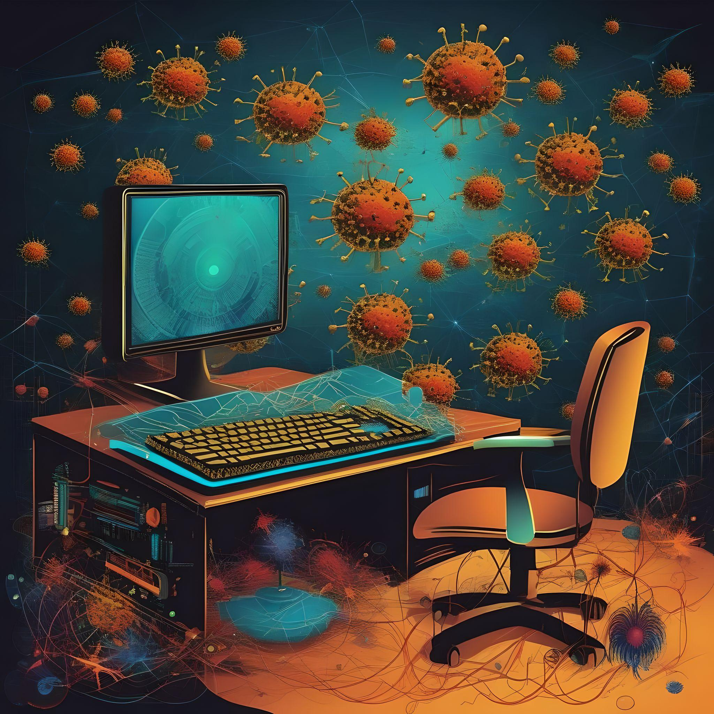

Что такое вирусы?
Вирус на компьютере — это вредоносное программное обеспечение, которое способно самостоятельно распространяться и инфицировать файлы или системные компоненты компьютера. Вирусы часто разрабатываются с целью нанесения вреда или получения несанкционированного доступа к информации на зараженном устройстве. Вирусы могут выполнять различные действия, такие как удаление, изменение или блокировка файлов, перехват данных пользователя, включая личные и финансовые сведения, а также использование ресурсов компьютера для нежелательных целей, например, для атак на другие системы. Чтобы защитить компьютер от вирусов, рекомендуется использовать антивирусные программы, регулярно обновлять программное обеспечение, быть осторожным при открытии вложений в электронных письмах и избегать посещения подозрительных веб-сайтов.
Топ 3 вирусов
Zeus
Это троян, который был изначально разработан для
кражи банковских данных. Этот вредоносный софт
может заражать компьютеры через
вредоносные вложения в электронных письмах или
вредоносные сайты. Он может перехватывать данные
о банковских аккаунтах, паролях и других
чувствительных сведениях.
Clop
Это тип вредоносной программы, известной как
"рансомвар" (ransomware). Рансомвары
зашифровывают файлы на компьютере пользователя,
а затем требуют
выкуп для предоставления ключа дешифрации. В
случае Clop, он специализируется на шифровании
файлов и требовании выкупа в обмен на их
восстановление.
Worm
Программа опасна тем, что при попадании в один
компьютер она не останавливается, а
распространяется на другие ПК через интернет.
Закрепившись, вирус
крадет данные, уничтожает файлы для выведения
операционной системы из строя и проводит
денежные операции
Как защитить себя от компьютерных вирусов
В современном мире, где технологии занимают центральное место в повседневной жизни, безопасность компьютера становится вопросом первостепенной важности. Компьютерные вирусы и вредоносные программы могут представлять угрозу для личных данных, финансов и даже неприкосновенности частной жизни. В этом сочинении мы рассмотрим несколько ключевых практик безопасности, которые могут помочь защитить себя от компьютерных вирусов.
В первую очередь, одним из наиболее эффективных методов защиты является установка надежного антивирусного программного обеспечения. Эти программы способны обнаруживать и блокировать вирусы, прежде чем они смогут причинить вред вашей системе. Регулярное обновление баз данных вирусов и сканирование системы — важные шаги для поддержания высокого уровня защиты.